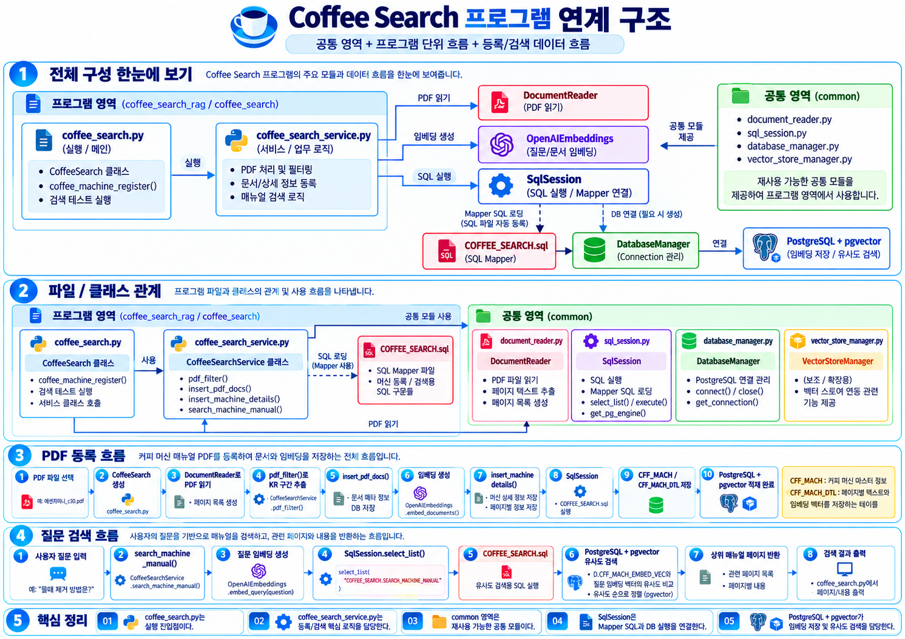

개발 공통 가이드¶
이 페이지는 Coffee Search의 실행 경로와 공통 모듈의 경계를 설명합니다. 시작 명령은 시작하기, SQL 작성과 로그 옵션은 SQL / SqlSession 사용 가이드, 실제 파일 트리는 프로젝트 구조 에서 확인할 수 있습니다.
전체 프로그램 구조¶


coffee_search.py 가 진입점이고 CoffeeSearchService 에 등록·검색을 요청합니다. PDF 읽기는 DocumentReader, 임베딩은 OpenAIEmbeddings, SQL 실행은 SqlSession 이 맡습니다. 서비스의 SQL 호출은 coffee_search.sql 의 statement로 이어지고, SqlSession 은 DatabaseManager 가 만든 PostgreSQL 연결을 사용합니다. DB의 벡터 저장과 유사도 연산에는 pgvector 타입이 필요합니다.
그림에는 등록과 검색 흐름을 함께 그렸지만 현재 메인 스크립트의 활성 코드는 검색 테스트뿐 입니다. VectorStoreManager 로 표시된 영역은 현재 빈 파일입니다. 그림의 메서드·경로 예시는 아래의 실제 소스를 우선해 읽으세요.
실행 파일 → Service → SQL¶
coffee_search.py 의 파일 하단은 SqlSession(result_log=True) 와 CoffeeSearchService 를 생성한 뒤 search_machine_manual() 을 호출합니다. CoffeeSearch 클래스는 등록 경로에서 PDF를 DocumentReader 로 읽습니다. coffee_machine_register() 는 PDF 필터와 등록 서비스를 연결하지만 호출 예시는 주석 처리되어 있습니다.
session = SqlSession(result_log=True)
coffee_search_service = CoffeeSearchService(sql_session=session)
search_docs = coffee_search_service.search_machine_manual(
brand="네스프레소",
machine_name="에센자 미니",
question="커피가 나오지 않을 때 어떻게 해야 하나요?",
limit=5,
)
실제 스크립트에서는 서비스 변수 이름을 coffeeSearchService 로 사용합니다. 위 예제는 동일한 생성·호출 API를 보여줍니다. coffee_search.sql 에는 머신 조회와 상세 등록, 검색 statement가 있고 서비스는 이를 coffee_search.statement 이름으로 호출합니다.
공통 영역¶
common/sql_session.py 의 SqlSession 은 생성 시 group_project/ 아래 *.sql 을 aiosql에 등록합니다. select_list() 와 select_one() 은 조회, execute() 와 execute_many() 는 변경·배치 실행에 사용합니다. transaction() 은 여러 호출이 같은 연결을 쓰도록 묶습니다. result_log 는 반환 행을 표로 표시하고 sql_log_mode 는 QUERY 로그 형식을 정합니다. Vector 파라미터는 로그에서 앞부분 값과 차원만 표시하며 원본은 DB에 전달합니다. execute_many() 는 INFO 로그가 활성화되면 모든 배치 건의 파라미터를 순번과 함께 출력합니다. get_pg_engine() 은 DB_URL 로 PGEngine 을 지연 생성하지만 Coffee Search는 현재 이 경로를 사용하지 않습니다.
common/database_manager.py 의 DatabaseManager 는 load_dotenv() 로 환경을 읽고 connect() 호출마다 psycopg 연결을 만듭니다. 연결 직후 pgvector 어댑터를 등록합니다. common/document_reader.py 의 DocumentReader 는 PDF를 페이지 번호와 추출 텍스트의 doc_list 로 바꿉니다. common/vector_store_manager.py 는 존재하지만 현재 내용이 없어 사용하지 않습니다.
Coffee Search 영역과 PDF 등록¶
등록 입력 PDF는 group_project/data/에센자미니_c30.pdf 입니다. 다음은 현재 구현된 순서입니다. 등록 함수는 구현되어 있으나 메인 스크립트에서 호출은 주석 처리되어 있습니다.
coffee_machine_register()가CoffeeSearch(file_path)를 만듭니다. 생성자에서DocumentReader(file_path)→set_pdf_reader()→set_pdf_doc_list()를 호출해 페이지별document_reader.doc_list를 준비합니다.CoffeeSearchService.pdf_filter()가 각 페이지의KR뒤 텍스트를 다음 언어 코드 등의 경계까지 추출합니다. 추출 텍스트가 없으면 그 페이지를 제외하고 원본 페이지 번호를 유지합니다.insert_pdf_docs()가 텍스트 목록을OpenAIEmbeddings.embed_documents()에 전달합니다. 반환값은 상세 등록 시Vector로 변환합니다.SqlSession.transaction()안에서coffee_search.select_machine으로 기존 머신을 찾습니다. 없으면generate_biz_id로 ID를 받고insert_machine으로CFF_MACH에 등록합니다.delete_machine_details로 해당 머신의 기존CFF_MACH_DTL행을 지웁니다.insert_machine_details()가 페이지 번호·텍스트·벡터를 맞춰 배치 파라미터를 만들고execute_many("coffee_search.insert_machine_detail", ...)로 상세를 다시 넣습니다.
임베딩 호출은 트랜잭션에 들어가기 전 에 이루어집니다. 따라서 API 호출이 실패하면 DB 변경이 시작되지 않습니다. 재등록 시 기존 상세 행은 삭제·재생성되므로 등록 호출을 활성화할 때 이 동작을 고려하세요. DocumentReader.set_pdf_chunk_doc_list() 는 현재 구현 예정 만 출력하며 이 흐름에 쓰이지 않습니다.
질문 검색과 Vector 검색¶
현재 활성 경로는 CoffeeSearchService.search_machine_manual() → OpenAIEmbeddings.embed_query(question) → Vector(query_vector) → SqlSession.select_list("coffee_search.search_machine_manual", ...) 순서입니다. 브랜드와 모델명, 질문 벡터, LIMIT 을 SQL 파라미터로 전달합니다.
SQL은 CFF_MACH 와 CFF_MACH_DTL 을 CFF_MACH_ID 로 JOIN하고 CFF_MACH_BRAND 및 CFF_MACH_NM 으로 머신을 제한합니다. D.CFF_MACH_EMBED_VEC <=> :EMBEDDING 값이 작은 순서로 정렬한 뒤 LIMIT :LIMIT 만큼 반환합니다. 이 연산은 cosine distance이고 SELECT의 SIMILARITY 는 1 - distance 입니다.
CFF_MACH_PAGE_NO 는 원본 PDF 페이지 번호, CFF_MACH_EMBED_TXT 는 저장한 한국어 텍스트입니다. CFF_MACH_EMBED_VEC 는 저장·검색에 쓰지만 현재 SELECT 결과에는 포함하지 않습니다. 반환 행에는 머신 ID, 브랜드·모델명, 페이지 번호·텍스트, SIMILARITY 가 있습니다. 기본 camel_case_keys=True 에서는 dict의 밑줄 컬럼명이 camelCase로 변환됩니다.
Embedding / pgvector¶
서비스 상수는 EMBEDDING_MODEL = "text-embedding-3-small" 과 EMBEDDING_DIMENSION = 1536 입니다. 현재 코드는 차원 상수를 별도 검증에 사용하지 않습니다. 문서 등록은 embed_documents(), 검색 질문은 embed_query() 를 사용합니다. DB 저장 컬럼은 CFF_MACH_DTL.CFF_MACH_EMBED_VEC 입니다. 현재 확인한 DB 덤프의 이 컬럼 선언은 public.vector 이며 1536차원 제약은 선언에 없습니다. 벡터 파라미터는 pgvector.utils.Vector 로 전달하고 DatabaseManager 가 연결에 pgvector 어댑터를 등록합니다.
SQL Mapper와 Connection / Transaction¶
coffee_search.sql 의 -- name: select_machine 은 다음처럼 호출합니다. coffee_search 가 파일 stem(namespace)이고 select_machine 이 statement 이름입니다.
machine = self.sql_session.select_one(
"coffee_search.select_machine",
{"BRAND": brand, "MACHINE_NAME": machine_name},
)
일반 호출은 필요한 연결을 하나 열어 실행하고 닫습니다. transaction() 안에서는 연결 하나를 재사용하며 정상 종료 시 COMMIT, 예외 시 ROLLBACK합니다. 등록은 머신 조회·등록과 상세 교체가 한 작업이므로 이 경로를 사용합니다. 전체 Mapper 구조와 로그 모드 예시는 SQL / SqlSession 사용 가이드 에 있습니다.
새 기능의 변경 위치¶
새 SQL은 해당 기능의 .sql 에 -- name: 으로 정의하고 Service에서 SqlSession 으로 호출합니다. Coffee Search의 업무 규칙과 임베딩 순서는 coffee_search_service.py, 실행 입력·출력은 coffee_search.py 에서 변경합니다. 여러 프로그램에 필요한 PDF 읽기는 common/document_reader.py, SQL 실행·연결의 공통 변경은 common/sql_session.py 와 common/database_manager.py 에서 다룹니다. 실제 파일 목록은 프로젝트 구조 에 있습니다.
현재 구현 상태와 주의사항¶
기본 실행은 검색만 수행합니다. PDF 등록 호출은 주석 처리되어 있습니다.
coffee_search.sql의select_test,lock_machine_registration,select_detail_by_page는 현재CoffeeSearchService에서 호출하지 않습니다.common/vector_store_manager.py와 PDF 청크 설정은 현재 구현된 저장 흐름이 아닙니다.구조 그림의 일부 파일·메서드 이름은 현재 소스와 다릅니다. 이 문서의 파일명과 실제 코드를 기준으로 작업하세요.